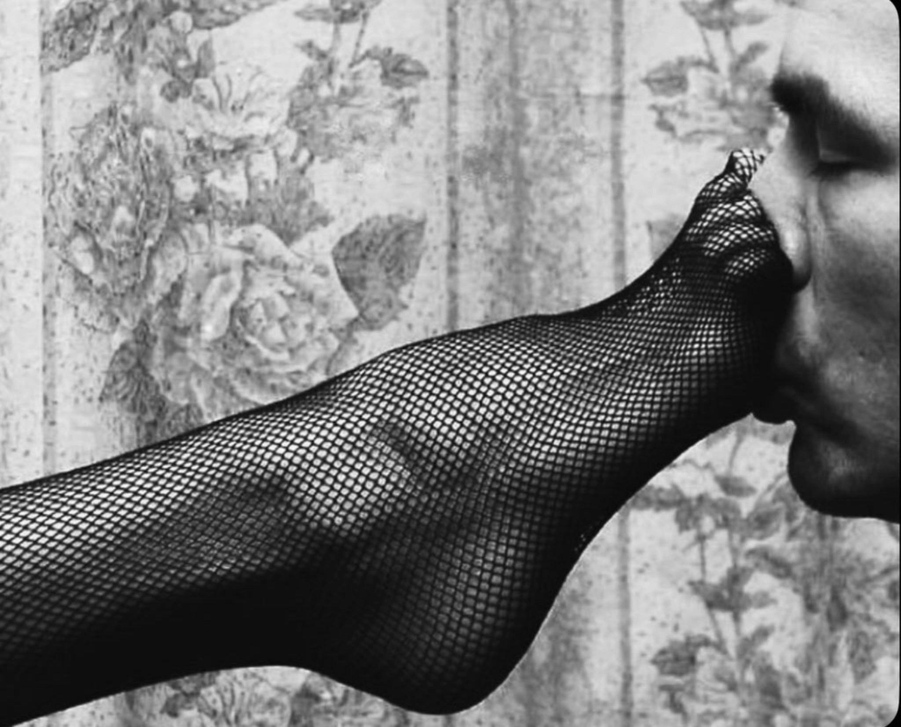

|

Как прекрасна Helene
Чудо радужных лент
В голубом серпантине волос
Шаловлива и для
Своего корабля
Лучше звона зеркальных стрекоз.
А на той стороне
В темно-синем огне
Есть страна фиолетовых фей.
Заложите же наш
Золотой экипаж
И стегните послушных коней.
Как прекрасна Helene
Чудо детских колен
В экипаже лазоревых снов
Как лукава и за
Голубые глаза
Можно спрятать сто тысяч цветов.
А на той стороне
В темно-синем огне
Есть страна фиолетовых фей
И все ближе она
И большая луна
Нас торопит настойчиво к ней.
Но Helene, но Helene,
Здесь живет Жан Мулен
И рогатый Месье Леонард.
В фиолетовом зле
На огромном козле
Они едут навстречу тебе.
Ты на той стороне
В темно-синем огне
Ты в стране фиолетовых фей.
Почему же, малыш,
Ты так сильно дрожишь
От ее волосатых теней?
Ах, Helene, ах, Helene,
Ou est ta robe de matin?
Где твой светло-малиновый бант?
Что за редкий порок
Меж твоих детских ног
Ищет твой саблезубый amant?
Ты на той стороне,
В темно-синем огне
Ты в стране фиолетовых фей.
Поцелуй же, enfant,
La fesse douce de satan,
Короля электрических змей.
До свиданья, Helene,
Будет вечен твой плен
В хороводе волков и гиен...
Будут крышки гробов,
Будет скрежет зубов,
И тягучая детская кровь.
Там на той стороне
В темно-синем огне
Там, в стране фиолетовых фей...
Только лучше туда
Ни за что, никогда
Не пускайте наивных детей.